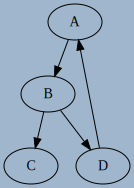
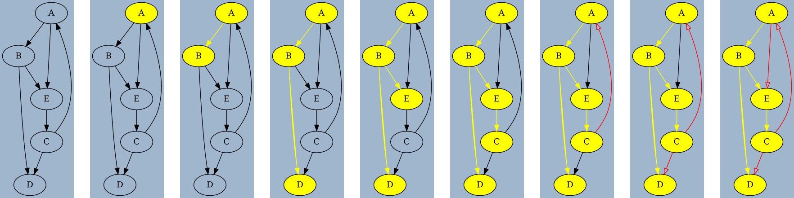

Parcours de graphes et applications
Parcours en profondeur
Comparaison avec un arbre
Le parcours en profondeur d'un graphe (Depth First Search en anglais), c'est-à-dire un parcours où on explore chaque chemin jusqu'à son extrémité finale, est équivalent à celui pour un arbre comme présenté dans le chapitre idoine, à une subtilité prêt : dans un graphe il est possible de trouver des boucles, ce qui pourrait amener à un chemin infini :
le cas d'une boucle

Dans un parcours DFS d'un graphe comme ci-dessus, et en partant de \(A\), on aura un parcours dans l'ordre suivant (en considérant les voisins dans l'ordre alphabétique) :
- On ira de \(A\) à \(B\) puis de \(B\) à \(C\) ;
- Une fois en \(C\), il faut remonter au dernier sommet visité, donc \(B\), et regarder si il existe d'autres voisins, donc on passera ensuite à \(D\), puis à \(A\), puis à \(B\), etc.
On obtient donc un parcours infini \(A -> B -> C -> D -> A -> ...\), et l'algorithme ne s'arrête pas.
Algorithme en langage naturel
Pour que l'algorithme puisse fonctionner, il faudra donc marquer les sommets déjà visités, comme sur l'exemple suivant :

On considèrera qu'il existe une méthode pour marquer les sommets, et donc qu'on n'explore plus un sommet déjà marqué.
fonction explore_graphe(G, s) :
Marquer(s)
pour chaque voisin v de s :
si v n'est pas marqué :
explorer_graphe(G,v)
Graphes avec de multiples composantes connexes
Cette fonction ne permet pas d'explorer tout le graphe si celui-ci comporte pluiseurs composantes connexes, car on explore uniquement de voisins en voisins :

Sur un graphe tel que ci-dessus, la fonction précédente appelée sur \(A\) n'explorera que les sommets \(A\), \(B\), \(C\) et \(D\) dans cet ordre.
Il faut donc encapsuler la fonction précédente dans une autre fonction :
fonction parcours_profondeur(G) :
pour chaque sommet s de G :
si s n'est pas marqué :
explorer_graphe(G,s)
Implémentation en Python
Pour pouvoir implémenter le parcours de graphe en profondeur, il nous faut utiliser une structure permettant de conserver les sommets visités, tout en gardant leur ordre. Une solution évidente est d'utiliser une liste Python, et d'utiliser en particulier sa propriété de mutabilité.
Hors programme : paramètre mutable d'une fonction
Considérons le code suivant et son exécution dans PythonTutor :
L'objectif est de comprendre la différence entre objets mutables et non-mutables :
- un objet de type
listest mutable, et possède une méthode.appendqui permet de lui ajouter un élément ; -
un objet de type
tupleest non-mutable. Pour ajouter un élément on est obligé de créer un nouvel objet, qu'on réaffecte au nomtpl:tpl = *tpl, nOn utilise ici l'opérateur
*pourunpacker(décompacter) les éléments constituant le tupletpl, puis ajouter l'élémentnau nouveau tuple.
A la fin de l'exécution du code, alors que les méthodes semblent similaires, on constate que les objets tuples créés ont disparu à la fin de l'exécution de chaque instance de la fonction fibonacci, alors que l'objet de type list a lui été modifié au fur et à mesure, et que ces modifications sont conservées !
Le paramètre lst de la fonction fibonacci est donc un argument mutable, ce qui :
- est parfois fort pratique ;
- est souvent un générateur d'effets de bords indésirés !
Totalement hors programme : utilisation d'une liste en paramètre non-mutable
En réalité, ce n'est pas tant la structure de liste utilisée qui est importante dans l'exemple ci-dessus, mais bien l'utilisation d'une méthode en place comme append. On peut en effet utiliser une liste comme un paramètre pseudo non-mutable comme dans l'exemple ci-dessous, avec la concaténation de listes :
Au vu de mon expérience, un conseil : NE FAITES SURTOUT PAS CA ! Vous vous éviterez des heures de débuggage frustrantes !
Si vous tenez à conserver un paramètre non-mutable, utilisez TOUJOURS une structure qui est construite en ce sens...
Implémentation en Python
- Ajouter à la classe
Graph(implémentation au choix) une méthodeget_vertices()renvoyant la liste des sommets dans l'ordre lexicographique. - Créer une fonction
explore_graph(G, s, explored)qui explore récursivement le grapheGà partir du sommets, connaissant un objet de typelistexploredcontenant la liste des sommets déjà explorés. - Créer une fonction
DFS(G)renvoyant la liste des sommets explorés, dans l'ordre d'exploration lexicographique (dans l'exemple du graphe à deux composantes connexes ci dessu, on obtiendra[A, B, C, D, E, F, G, H], et dans l'exemple présenté exhaustivement, on aura[A, B, D, E, C]).
A venir !
Parcours en largeur
Comparaison avec un arbre
Le parcours en largeur d'un graphe (Breadth First Search en anglais), c'est-à-dire un parcours où on explore chaque chemin jusqu'à son extrémité finale, est équivalent à celui pour un arbre comme présenté dans le chapitre idoine, tout en ajoutant le même problème que pour le parcours en profondeur : il faut marquer les sommets déjà visités.
Ainsi, dans le graphe ci-dessus, l'ordre de parcours des sommets est : \(A, B, E, C, D, F, G, H\).
Algorithme en langage naturel
L'algorithme itératif s'implémente à l'aide d'une file :
fonction explore_largeur(G, s):
Créer une file f
Enfiler s dans f
marquer s
tant que la file est non vide
defiler f dans s
afficher s
pour tout voisin t de s dans G
si t non marqué
Enfiler t dans f
marquer t
De même que pour un parcours en profondeur, la fonction ci-dessus ne permet pas un parcours de graphe non-connexe. On complètera donc cette fonction par :
fonction parcours_largeur(G) :
Pour chaque sommet s de G
si s n'est pas marqué
explore_largeur(G,s)
Implémentation en Python
Percours en largeur
-
Créer une fonction
explore_width(G,s)qui effectue un parcours en largeur à partir du sommetsdu grapheGet renvoie les sommets dans l'ordre de visite. Pour éviter d'avoir à réimplémenter nous-même une classeFile, nous pouvons utiliser le modulequeuede Python et les commanes suivantes :F = queue.Queue(), pour créer une file vide ;F.put(item): enfileitemdans la fileF;item = F.get(): défile la fileFet stocke dansitem;
-
Créer une fonction
BFS(G)qui renvoie les sommets dans l'ordre de visite du parcours en largeur.
A venir !
Application : Recherche de cycle dans un graphe
Il est parfois nécessaire de détecter dans un graphe la présence d'un cycle, comme par exemple :
- pour déterminer la longueur de cycle d'un générateur de nombre pseudo-aléatoires ;
- en cryptographie, en particulier pour détecter des collisions dans des fonctions de hachage cryptographiques (CHF) ;
- pour détecter des boucles infinies dans certains programmes, en utilisant une représentation du programme sous la forme d'un graphe (Méthodes formelles) ;
- etc.
Le parcours en profondeur est adapté aux recherches de cycles dans un graphe, mais il faudra lui apporter quelques modifications. En effet, dans le parcours en profondeur, on marque un noeud avant d'explorer ses voisins. Quand on retombe sur un noeud déjà marqué, on ne peut pas forcément savoir si c'est à cause de la présence d'un cycle. Prenons comme exemple les deux graphes ci-dessous :
Tips


- Dans le cas du graphe de gauche, on va explorer
A, puisBpuisC, et doncCsera marqué. Puis on retombera surCen venant deD, mais sans cycle puisqu'il s'agit de chemins parallèles. - Dans le cas du graphe de droite, on va explorer
A, puisBpuisC, et doncCsera marqué. Puis on retombera surCen venant deD, mais par un cycle !
La différence entre les deux situations est que dans le premier cas, la visite des voisins de C est terminée, alors qu'elle est toujours en cours dans le deuxième cas. On va donc devoir différencier ces deux situations.
Algorithme de détection de cycles
Nous adopterons une solution en utilisant 3 couleurs pour marquer ces sommets : blanc, gris et noir. Initialement, tous les sommets seront de couleur blanche.
Lorsqu'on visitera un sommet s :
- s'il est blanc :
- on colore le sommet
sen gris ; - on visite tous les voisins de
srécursivement ; - on colore le sommet
sen noir une fois toutes les étapes précédentes franchies.
- on colore le sommet
- s'il est gris, c'est qu'on vient de découvrir un cycle ;
- s'il est noir, on ne fait rien.
Application
Pour chacun des graphes ci-dessous, appliquez l'algorithme de détection d'un cycle au graphe ci-dessous (vous partirez du sommet de votre choix).


Codage en Python
1 2 3 4 5 6 7 8 9 10 11 12 13 14 15 16 17 18 19 20 21 22 23 24 25 | |